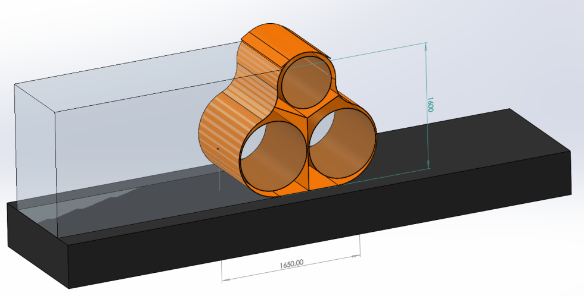

Flooding can strike at any moment. It is the most frequently occurring natural disaster around the world and is increasing in frequency year on year.
MODELS
The Arete Flood Barrier can be deployed on almost any surface;
grass, asphalt, tile, stone floorings, sand etc.
Effective and efficient flood protection depnds on
three main variables:
Arete Flood PRO 160.
Standard construction designed for medium rivers and fast water
ways. Total height is 160cm when inflated.

Arete Flood PRO 220. Larger ballast tube construction designed for larger rivers and fast water ways. Total height is 160cm when inflated.
Arete Flood PRO 160S. Based on the Flood PRO 160 with the addition of a special skirt all along the barrier, which is using the power of the flood to stop the flood. Force of the water is pushing to the skirt and the skirt is holding the barrier.


Arete are able to assist in the best way to plan and decide where and how to protect an area from flooding in the best possible way. Deployment of effective flood protection depends on the type of flood. A flash flood will differ from that of a flood which inundates the lower part of an alluvial river or a flood as a result of extreme precipitation.
APPLICATION
Construction is made as a single unit and can be produced from 20 up to 200 meters long. The Bottom ballast tubes are filled with water, and the top tube can be filled with water or air, which should be decided based on the weather and natural conditions. Connections between segments have an aluminium or stainless steel single dispense system using fast camlock couplings. During installation a special sock will cover all connection points and will provide protection against any leakages.
- PUR/PVC alloy, 1360g. per meter, will provide extra durability. This material has excellent UV resistance as well as strong mechanical and resistance to any other possible damages.
- The Construction on the external side has an antispp surface to avoid installed barriers from moving.
- All along the segment, on both sides are welded reflective stripes. On each connection there is a place to put an emergency pght.
The Arete Flood PRO has a unique design where the outer layer can be pierced but the inner layer remins in tact and effective.
- All welding places are made by High Frequency welding technology, which makes construction very strong and durable
- Can be filled from a single point, but water/air inflation valves are installed every 100 meters or at least in two places on each segment.
- Discharge valves are made with possibipty to connect a pump to suck the water out to enable the barrier to be recovered faster.
- All valves are equipped with ball-type plugs and fast connectors (Camlock, Storz, Gost or simipar).
- To deploy a barrier you need: set of hoses; water pump and air blower. No additional elements are needed.
- No special knowledge or skills are needed for deployment. Process is basic and fast and a quick start guide is provided.
- Arete flood barriers are specially designed to make depvery to site very easy. Dry width is 220cm. Barriers can be stored and forwarded in a 40' ISO container or in containers with Hookpft systems. Up to 1500 meters of barrier fits into a container. Hydraupc winders/reels is one of the reccommended options for deployment and recovery. Size of winder/reel with 200m of Flood PRO barrier is W240cm x H250cm x L250cm. Weight of this set is ~1800kg. Six winders/reels can be forwarded using standard truck with 13,5 meters trailer.